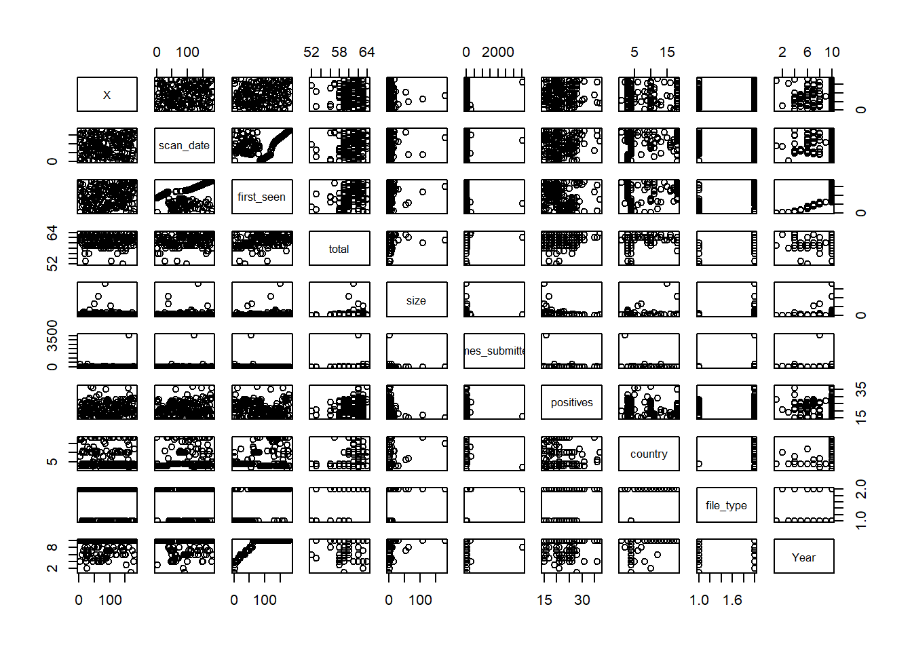
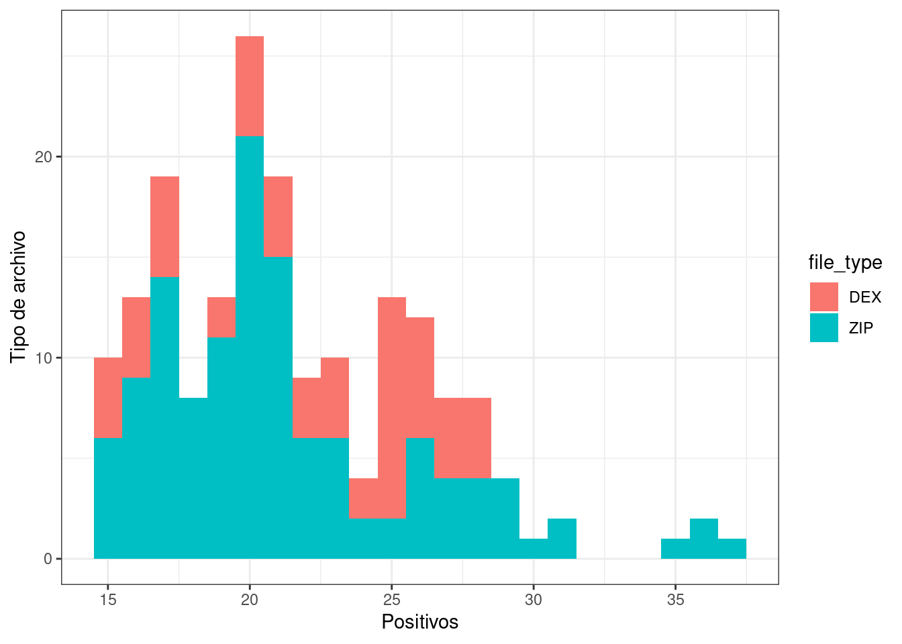
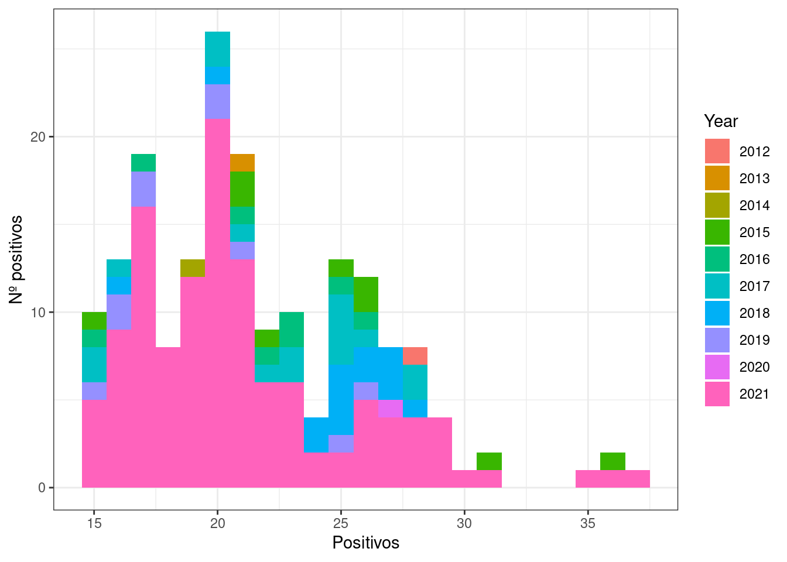
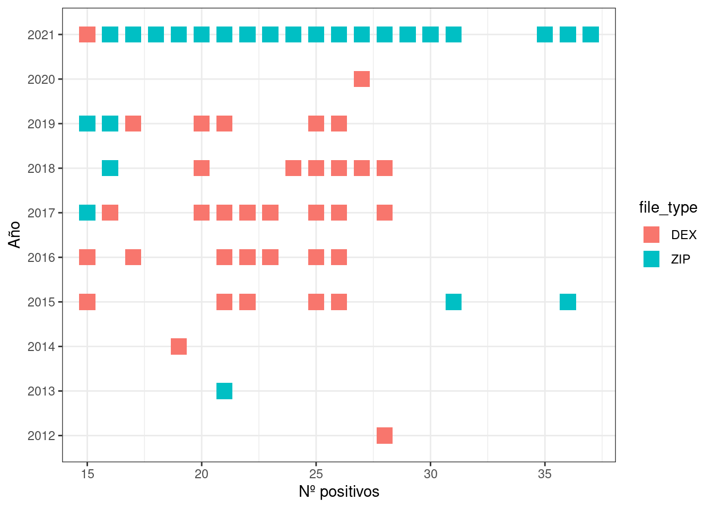

Chapter 4 Regresion, reglas de asociación y Clustering
4.1 Regresion
library(dplyr)
library(tidyverse)
library(ggplot2)
library(readr)
virusTotal <- read.csv('~/LCC/ProyectoVT/Proyecto/virusTotal.csv')
virusTotal <- virusTotal %>%
mutate(Year = substr(virusTotal$first_seen, 0, 4))
virusTotal <- virusTotal %>%
rename(country = submission.submitter_country)
virusTotal <- virusTotal %>%
rename(file_type = additional_info.exiftool.FileType)Ahora el tamaño de los archivos lo pasamos a gb para un manejo mas fácil
virusTotal <- virusTotal %>%
mutate(size = virusTotal$size/1000000)Vamos a ver todas las graficas de nuestro dataset:
plot(virusTotal)
Como vemos no parece que tengamos una relación directa por parte de dos variables, hemos pensado que estaría bien analizar o ver si hay una relacion entre el tamaño que tiene un archivo y si es positivo o no ya que podriamos pensar de que al pesar mas un archivo es mas propenso a traer algun tipo de software malicioso.
Vamos a analizar el tamaño frente al numero de positivos para ver si existe algun tipo de correlacion
ggplot2::ggplot(virusTotal,aes(x=size, y=positives))+geom_point()+geom_line()f1 <- lm(positives~size, data = virusTotal)
plot(f1)Y aqui vemos todas las graficas disponibles
summary(f1)##
## Call:
## lm(formula = positives ~ size, data = virusTotal)
##
## Residuals:
## Min 1Q Median 3Q Max
## -6.8717 -2.9135 -0.8898 3.0855 15.3370
##
## Coefficients:
## Estimate Std. Error t value Pr(>|t|)
## (Intercept) 21.91526 0.34738 63.088 < 2e-16 ***
## size -0.06463 0.01984 -3.258 0.00134 **
## ---
## Signif. codes: 0 '***' 0.001 '**' 0.01 '*' 0.05 '.' 0.1 ' ' 1
##
## Residual standard error: 4.45 on 181 degrees of freedom
## Multiple R-squared: 0.0554, Adjusted R-squared: 0.05018
## F-statistic: 10.62 on 1 and 181 DF, p-value: 0.001339De aqui podemos sacar que la correlacion es practicamente nula, solo el 5,54% de la variabilidad de los positivos tiene que ver con el tamaño, por lo tanto nuestro primer acercamiento es erroneo.
ggplot(virusTotal, aes(x = size, y = positives)) +
geom_point() +
geom_line(aes(x = size, y = predict(f1,virusTotal)),col="blue") + geom_line()Sin embargo con la grafica en el que vemos la prediccion, observamos que la tendencia es a tener menor numero de positivos cuanto mayor sea el tamaño del archivo analizado
4.2 Reglas de asociación
library(arules)Utilizando apriori vamos a ver las reglas de nuestro dataset
mis_reglas <- apriori(virusTotal, parameter = list(supp = 0.28818, conf = 0.27634,minlen=2))## Apriori
##
## Parameter specification:
## confidence minval smax arem aval originalSupport maxtime support minlen
## 0.27634 0.1 1 none FALSE TRUE 5 0.28818 2
## maxlen target ext
## 10 rules TRUE
##
## Algorithmic control:
## filter tree heap memopt load sort verbose
## 0.1 TRUE TRUE FALSE TRUE 2 TRUE
##
## Absolute minimum support count: 52
##
## set item appearances ...[0 item(s)] done [0.00s].
## set transactions ...[405 item(s), 183 transaction(s)] done [0.00s].
## sorting and recoding items ... [18 item(s)] done [0.00s].
## creating transaction tree ... done [0.00s].
## checking subsets of size 1 2 3 4 done [0.00s].
## writing ... [69 rule(s)] done [0.00s].
## creating S4 object ... done [0.00s].length(mis_reglas)## [1] 69Este es el numero de reglas que podemos encontrar en nuestro dataset El resumen de las reglas obtenidas seria el siguiente:
summary(mis_reglas)## set of 69 rules
##
## rule length distribution (lhs + rhs):sizes
## 2 3 4
## 34 27 8
##
## Min. 1st Qu. Median Mean 3rd Qu. Max.
## 2.000 2.000 3.000 2.623 3.000 4.000
##
## summary of quality measures:
## support confidence coverage lift
## Min. :0.2896 Min. :0.4240 Min. :0.2896 Min. :1.158
## 1st Qu.:0.2951 1st Qu.:0.5760 1st Qu.:0.3060 1st Qu.:1.402
## Median :0.3060 Median :0.9310 Median :0.3661 Median :1.500
## Mean :0.3397 Mean :0.8164 Mean :0.4468 Mean :1.642
## 3rd Qu.:0.3169 3rd Qu.:1.0000 3rd Qu.:0.5519 3rd Qu.:1.778
## Max. :0.6339 Max. :1.0000 Max. :0.6831 Max. :3.155
## count
## Min. : 53.00
## 1st Qu.: 54.00
## Median : 56.00
## Mean : 62.17
## 3rd Qu.: 58.00
## Max. :116.00
##
## mining info:
## data ntransactions support confidence
## virusTotal 183 0.28818 0.27634
## call
## apriori(data = virusTotal, parameter = list(supp = 0.28818, conf = 0.27634, minlen = 2))Como podemos ver en el resumen, nos muestran datos de las reglas generadas, podemos ver por ejemplo que la media obtenida en el soporte es de 0.28818 lo cual no es muy alto e indica que la media de las reglas obtenidas no son muy frecuentes. La confianza tenemos una media de 0.27634 lo cual nos dice que la media en el dataset indica que el 27,63% de las X tambien contienen a Y.
Estas son todas las reglas calculadas
inspect(mis_reglas)## lhs rhs support confidence coverage lift count
## [1] {country=CA} => {times_submitted=[1,2)} 0.3060109 1.0000000 0.3060109 1.811881 56
## [2] {times_submitted=[1,2)} => {country=CA} 0.3060109 0.5544554 0.5519126 1.811881 56
## [3] {country=CA} => {Year=2021} 0.3060109 1.0000000 0.3060109 1.500000 56
## [4] {Year=2021} => {country=CA} 0.3060109 0.4590164 0.6666667 1.500000 56
## [5] {country=CA} => {file_type=ZIP} 0.3060109 1.0000000 0.3060109 1.464000 56
## [6] {file_type=ZIP} => {country=CA} 0.3060109 0.4480000 0.6830601 1.464000 56
## [7] {file_type=DEX} => {country=CZ} 0.3169399 1.0000000 0.3169399 3.155172 58
## [8] {country=CZ} => {file_type=DEX} 0.3169399 1.0000000 0.3169399 3.155172 58
## [9] {file_type=DEX} => {times_submitted=[2,3.54e+03]} 0.2950820 0.9310345 0.3169399 2.077796 54
## [10] {times_submitted=[2,3.54e+03]} => {file_type=DEX} 0.2950820 0.6585366 0.4480874 2.077796 54
## [11] {country=CZ} => {times_submitted=[2,3.54e+03]} 0.2950820 0.9310345 0.3169399 2.077796 54
## [12] {times_submitted=[2,3.54e+03]} => {country=CZ} 0.2950820 0.6585366 0.4480874 2.077796 54
## [13] {size=[3.03,178]} => {Year=2021} 0.2896175 0.8688525 0.3333333 1.303279 53
## [14] {Year=2021} => {size=[3.03,178]} 0.2896175 0.4344262 0.6666667 1.303279 53
## [15] {size=[3.03,178]} => {file_type=ZIP} 0.3005464 0.9016393 0.3333333 1.320000 55
## [16] {file_type=ZIP} => {size=[3.03,178]} 0.3005464 0.4400000 0.6830601 1.320000 55
## [17] {size=[1.85,3.03)} => {times_submitted=[1,2)} 0.2950820 0.8852459 0.3333333 1.603960 54
## [18] {times_submitted=[1,2)} => {size=[1.85,3.03)} 0.2950820 0.5346535 0.5519126 1.603960 54
## [19] {size=[1.85,3.03)} => {Year=2021} 0.3114754 0.9344262 0.3333333 1.401639 57
## [20] {Year=2021} => {size=[1.85,3.03)} 0.3114754 0.4672131 0.6666667 1.401639 57
## [21] {size=[1.85,3.03)} => {file_type=ZIP} 0.3005464 0.9016393 0.3333333 1.320000 55
## [22] {file_type=ZIP} => {size=[1.85,3.03)} 0.3005464 0.4400000 0.6830601 1.320000 55
## [23] {positives=[19,23)} => {file_type=ZIP} 0.2896175 0.7910448 0.3661202 1.158090 53
## [24] {file_type=ZIP} => {positives=[19,23)} 0.2896175 0.4240000 0.6830601 1.158090 53
## [25] {total=[62,64]} => {Year=2021} 0.3497268 0.8888889 0.3934426 1.333333 64
## [26] {Year=2021} => {total=[62,64]} 0.3497268 0.5245902 0.6666667 1.333333 64
## [27] {total=[62,64]} => {file_type=ZIP} 0.3934426 1.0000000 0.3934426 1.464000 72
## [28] {file_type=ZIP} => {total=[62,64]} 0.3934426 0.5760000 0.6830601 1.464000 72
## [29] {times_submitted=[1,2)} => {Year=2021} 0.5519126 1.0000000 0.5519126 1.500000 101
## [30] {Year=2021} => {times_submitted=[1,2)} 0.5519126 0.8278689 0.6666667 1.500000 101
## [31] {times_submitted=[1,2)} => {file_type=ZIP} 0.5300546 0.9603960 0.5519126 1.406020 97
## [32] {file_type=ZIP} => {times_submitted=[1,2)} 0.5300546 0.7760000 0.6830601 1.406020 97
## [33] {Year=2021} => {file_type=ZIP} 0.6338798 0.9508197 0.6666667 1.392000 116
## [34] {file_type=ZIP} => {Year=2021} 0.6338798 0.9280000 0.6830601 1.392000 116
## [35] {times_submitted=[1,2),
## country=CA} => {Year=2021} 0.3060109 1.0000000 0.3060109 1.500000 56
## [36] {country=CA,
## Year=2021} => {times_submitted=[1,2)} 0.3060109 1.0000000 0.3060109 1.811881 56
## [37] {times_submitted=[1,2),
## Year=2021} => {country=CA} 0.3060109 0.5544554 0.5519126 1.811881 56
## [38] {times_submitted=[1,2),
## country=CA} => {file_type=ZIP} 0.3060109 1.0000000 0.3060109 1.464000 56
## [39] {country=CA,
## file_type=ZIP} => {times_submitted=[1,2)} 0.3060109 1.0000000 0.3060109 1.811881 56
## [40] {times_submitted=[1,2),
## file_type=ZIP} => {country=CA} 0.3060109 0.5773196 0.5300546 1.886598 56
## [41] {country=CA,
## Year=2021} => {file_type=ZIP} 0.3060109 1.0000000 0.3060109 1.464000 56
## [42] {country=CA,
## file_type=ZIP} => {Year=2021} 0.3060109 1.0000000 0.3060109 1.500000 56
## [43] {file_type=ZIP,
## Year=2021} => {country=CA} 0.3060109 0.4827586 0.6338798 1.577586 56
## [44] {country=CZ,
## file_type=DEX} => {times_submitted=[2,3.54e+03]} 0.2950820 0.9310345 0.3169399 2.077796 54
## [45] {times_submitted=[2,3.54e+03],
## file_type=DEX} => {country=CZ} 0.2950820 1.0000000 0.2950820 3.155172 54
## [46] {times_submitted=[2,3.54e+03],
## country=CZ} => {file_type=DEX} 0.2950820 1.0000000 0.2950820 3.155172 54
## [47] {size=[1.85,3.03),
## times_submitted=[1,2)} => {Year=2021} 0.2950820 1.0000000 0.2950820 1.500000 54
## [48] {size=[1.85,3.03),
## Year=2021} => {times_submitted=[1,2)} 0.2950820 0.9473684 0.3114754 1.716519 54
## [49] {times_submitted=[1,2),
## Year=2021} => {size=[1.85,3.03)} 0.2950820 0.5346535 0.5519126 1.603960 54
## [50] {size=[1.85,3.03),
## times_submitted=[1,2)} => {file_type=ZIP} 0.2896175 0.9814815 0.2950820 1.436889 53
## [51] {size=[1.85,3.03),
## file_type=ZIP} => {times_submitted=[1,2)} 0.2896175 0.9636364 0.3005464 1.745995 53
## [52] {times_submitted=[1,2),
## file_type=ZIP} => {size=[1.85,3.03)} 0.2896175 0.5463918 0.5300546 1.639175 53
## [53] {size=[1.85,3.03),
## Year=2021} => {file_type=ZIP} 0.2950820 0.9473684 0.3114754 1.386947 54
## [54] {size=[1.85,3.03),
## file_type=ZIP} => {Year=2021} 0.2950820 0.9818182 0.3005464 1.472727 54
## [55] {file_type=ZIP,
## Year=2021} => {size=[1.85,3.03)} 0.2950820 0.4655172 0.6338798 1.396552 54
## [56] {total=[62,64],
## Year=2021} => {file_type=ZIP} 0.3497268 1.0000000 0.3497268 1.464000 64
## [57] {total=[62,64],
## file_type=ZIP} => {Year=2021} 0.3497268 0.8888889 0.3934426 1.333333 64
## [58] {file_type=ZIP,
## Year=2021} => {total=[62,64]} 0.3497268 0.5517241 0.6338798 1.402299 64
## [59] {times_submitted=[1,2),
## Year=2021} => {file_type=ZIP} 0.5300546 0.9603960 0.5519126 1.406020 97
## [60] {times_submitted=[1,2),
## file_type=ZIP} => {Year=2021} 0.5300546 1.0000000 0.5300546 1.500000 97
## [61] {file_type=ZIP,
## Year=2021} => {times_submitted=[1,2)} 0.5300546 0.8362069 0.6338798 1.515108 97
## [62] {times_submitted=[1,2),
## country=CA,
## Year=2021} => {file_type=ZIP} 0.3060109 1.0000000 0.3060109 1.464000 56
## [63] {times_submitted=[1,2),
## country=CA,
## file_type=ZIP} => {Year=2021} 0.3060109 1.0000000 0.3060109 1.500000 56
## [64] {country=CA,
## file_type=ZIP,
## Year=2021} => {times_submitted=[1,2)} 0.3060109 1.0000000 0.3060109 1.811881 56
## [65] {times_submitted=[1,2),
## file_type=ZIP,
## Year=2021} => {country=CA} 0.3060109 0.5773196 0.5300546 1.886598 56
## [66] {size=[1.85,3.03),
## times_submitted=[1,2),
## Year=2021} => {file_type=ZIP} 0.2896175 0.9814815 0.2950820 1.436889 53
## [67] {size=[1.85,3.03),
## times_submitted=[1,2),
## file_type=ZIP} => {Year=2021} 0.2896175 1.0000000 0.2896175 1.500000 53
## [68] {size=[1.85,3.03),
## file_type=ZIP,
## Year=2021} => {times_submitted=[1,2)} 0.2896175 0.9814815 0.2950820 1.778328 53
## [69] {times_submitted=[1,2),
## file_type=ZIP,
## Year=2021} => {size=[1.85,3.03)} 0.2896175 0.5463918 0.5300546 1.639175 53Vamos a ordenar las reglas por lift y mostramos las 10 reglas con mas lift
mis_reglas_lift <- sort(mis_reglas, by = "lift")
inspect(mis_reglas_lift[1:10])## lhs rhs support confidence coverage lift count
## [1] {file_type=DEX} => {country=CZ} 0.3169399 1.0000000 0.3169399 3.155172 58
## [2] {country=CZ} => {file_type=DEX} 0.3169399 1.0000000 0.3169399 3.155172 58
## [3] {times_submitted=[2,3.54e+03],
## file_type=DEX} => {country=CZ} 0.2950820 1.0000000 0.2950820 3.155172 54
## [4] {times_submitted=[2,3.54e+03],
## country=CZ} => {file_type=DEX} 0.2950820 1.0000000 0.2950820 3.155172 54
## [5] {file_type=DEX} => {times_submitted=[2,3.54e+03]} 0.2950820 0.9310345 0.3169399 2.077796 54
## [6] {times_submitted=[2,3.54e+03]} => {file_type=DEX} 0.2950820 0.6585366 0.4480874 2.077796 54
## [7] {country=CZ} => {times_submitted=[2,3.54e+03]} 0.2950820 0.9310345 0.3169399 2.077796 54
## [8] {times_submitted=[2,3.54e+03]} => {country=CZ} 0.2950820 0.6585366 0.4480874 2.077796 54
## [9] {country=CZ,
## file_type=DEX} => {times_submitted=[2,3.54e+03]} 0.2950820 0.9310345 0.3169399 2.077796 54
## [10] {times_submitted=[1,2),
## file_type=ZIP} => {country=CA} 0.3060109 0.5773196 0.5300546 1.886598 56Vamos a ordenar las reglas por support y mostramos las 10 reglas con mas support
mis_reglas_support <- sort(mis_reglas, by = "support")
inspect(mis_reglas_support[1:10])## lhs rhs
## [1] {Year=2021} => {file_type=ZIP}
## [2] {file_type=ZIP} => {Year=2021}
## [3] {times_submitted=[1,2)} => {Year=2021}
## [4] {Year=2021} => {times_submitted=[1,2)}
## [5] {times_submitted=[1,2)} => {file_type=ZIP}
## [6] {file_type=ZIP} => {times_submitted=[1,2)}
## [7] {times_submitted=[1,2), Year=2021} => {file_type=ZIP}
## [8] {times_submitted=[1,2), file_type=ZIP} => {Year=2021}
## [9] {file_type=ZIP, Year=2021} => {times_submitted=[1,2)}
## [10] {total=[62,64]} => {file_type=ZIP}
## support confidence coverage lift count
## [1] 0.6338798 0.9508197 0.6666667 1.392000 116
## [2] 0.6338798 0.9280000 0.6830601 1.392000 116
## [3] 0.5519126 1.0000000 0.5519126 1.500000 101
## [4] 0.5519126 0.8278689 0.6666667 1.500000 101
## [5] 0.5300546 0.9603960 0.5519126 1.406020 97
## [6] 0.5300546 0.7760000 0.6830601 1.406020 97
## [7] 0.5300546 0.9603960 0.5519126 1.406020 97
## [8] 0.5300546 1.0000000 0.5300546 1.500000 97
## [9] 0.5300546 0.8362069 0.6338798 1.515108 97
## [10] 0.3934426 1.0000000 0.3934426 1.464000 72Como sabemos, el soporte nos indica el porcentaje de frecuencia con el que pasa esa regla vemos como cuando el año es 2021 en el 63,3% de la veces el tipo de archivo es ZIP
Vamos a ordenar las reglas por confianza y mostramos las 10 reglas con mas confianza
mis_reglas_confidence <- sort(mis_reglas, by = "confidence")
inspect(mis_reglas_confidence[1:10])## lhs rhs support
## [1] {country=CA} => {times_submitted=[1,2)} 0.3060109
## [2] {country=CA} => {Year=2021} 0.3060109
## [3] {country=CA} => {file_type=ZIP} 0.3060109
## [4] {file_type=DEX} => {country=CZ} 0.3169399
## [5] {country=CZ} => {file_type=DEX} 0.3169399
## [6] {total=[62,64]} => {file_type=ZIP} 0.3934426
## [7] {times_submitted=[1,2)} => {Year=2021} 0.5519126
## [8] {times_submitted=[1,2), country=CA} => {Year=2021} 0.3060109
## [9] {country=CA, Year=2021} => {times_submitted=[1,2)} 0.3060109
## [10] {times_submitted=[1,2), country=CA} => {file_type=ZIP} 0.3060109
## confidence coverage lift count
## [1] 1 0.3060109 1.811881 56
## [2] 1 0.3060109 1.500000 56
## [3] 1 0.3060109 1.464000 56
## [4] 1 0.3169399 3.155172 58
## [5] 1 0.3169399 3.155172 58
## [6] 1 0.3934426 1.464000 72
## [7] 1 0.5519126 1.500000 101
## [8] 1 0.3060109 1.500000 56
## [9] 1 0.3060109 1.811881 56
## [10] 1 0.3060109 1.464000 56De aqui podemos sacar por ejemplo que el pais CA solo ha enviado archivos de tipo ZIP y en 2021 o tambien por ejemplo como vimos anteriormente en los graficos que el pais CZ siempre envia DEX de tipo de archivo.
4.3 Clustering
library(magrittr)Preparamos el kmeans con 4 centros y usaremos el tamaño frente al numero de positivos
set.seed(1)
virus <- virusTotal %>%
select(c("size","positives"))%>%
kmeans(centers=4, nstart=10)
str(virus)## List of 9
## $ cluster : int [1:183] 4 4 4 2 4 4 4 4 4 2 ...
## $ centers : num [1:4, 1:2] 178.36 1.76 74.81 4.49 15 ...
## ..- attr(*, "dimnames")=List of 2
## .. ..$ : chr [1:4] "1" "2" "3" "4"
## .. ..$ : chr [1:2] "size" "positives"
## $ totss : num 54130
## $ withinss : num [1:4] 0 912 1675 3606
## $ tot.withinss: num 6193
## $ betweenss : num 47937
## $ size : int [1:4] 1 65 3 114
## $ iter : int 2
## $ ifault : int 0
## - attr(*, "class")= chr "kmeans"Vemos el tamaño de los clusters y de los centroides
virus$size## [1] 1 65 3 114virus$centers## size positives
## 1 178.355426 15.00000
## 2 1.761319 26.61538
## 3 74.811670 16.00000
## 4 4.487114 18.86842Ahora vamos a visualizar un grafico del tamaño(eje X) frente al numero de positivos(eje Y), lo dibujaremos con colores segun el cluster al que pertenezcay la etiqueta sera el tipo de archivo analizado.
Como la grafica quedaba muy comprimida la vamos a mostrar por partes para un mejor entendimiento
plot(virusTotal$size,virusTotal$positives, type="n",xlim = c(0,10), xlab = "size",ylab = "positives")
text(x=virusTotal$size, y=virusTotal$positives, labels=virusTotal$file_type,
col=virus$cluster+1)
Aqui vemos los archivos de entre 0 y 10 gb que es donde se concentran la mayoria
plot(virusTotal$size,virusTotal$positives, type="n",xlim = c(11,100), xlab = "size",ylab = "positives")
text(x=virusTotal$size, y=virusTotal$positives, labels=virusTotal$file_type,
col=virus$cluster+1)
Aqui los archivos entre 11 y 100 gb que aunque haya menos tambien podemos ver los clusters en los que se agrupan
plot(virusTotal$size,virusTotal$positives, type="n", xlab = "size",ylab = "positives")
text(x=virusTotal$size, y=virusTotal$positives, labels=virusTotal$file_type,
col=virus$cluster+1)
Y por ultimo aqui ya vemos la gráfica al completo